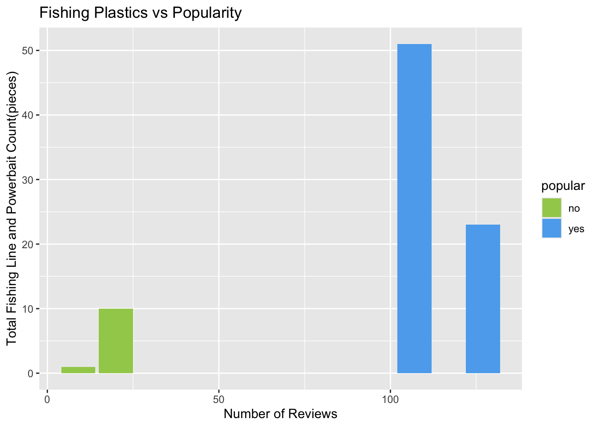
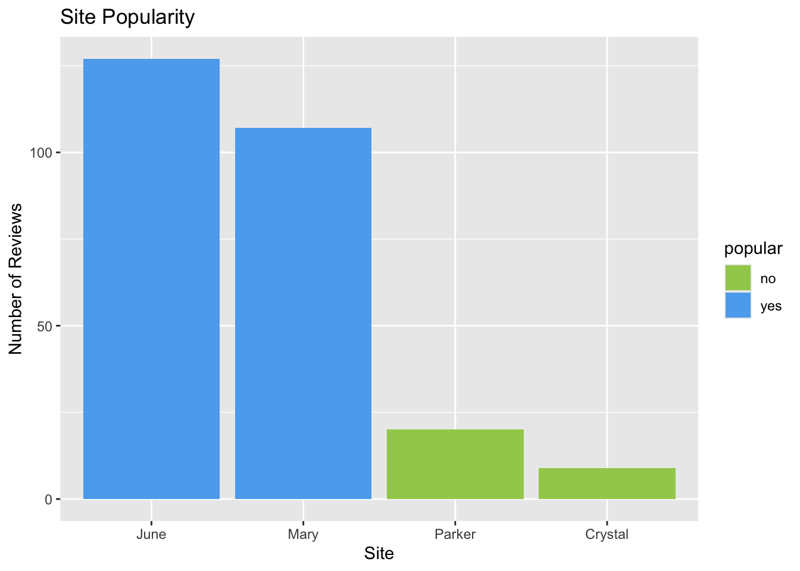
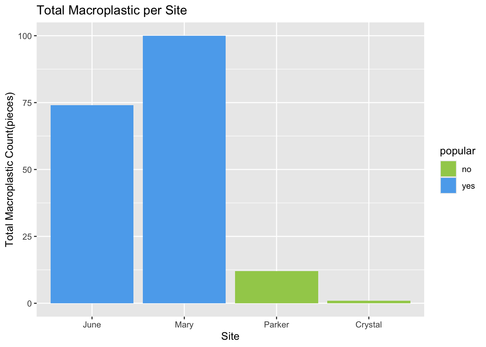
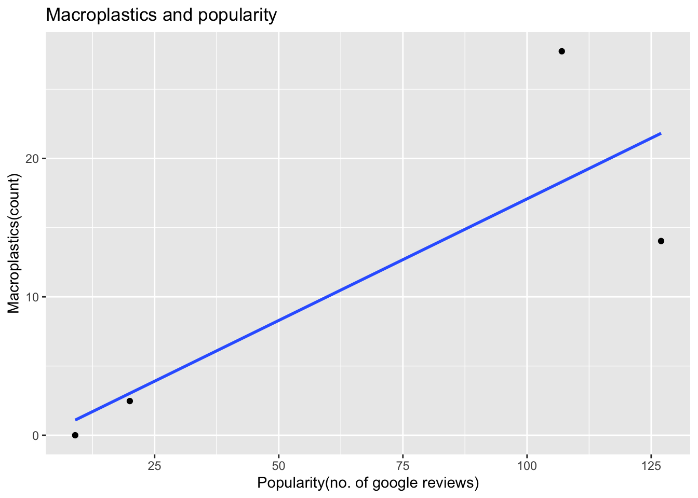
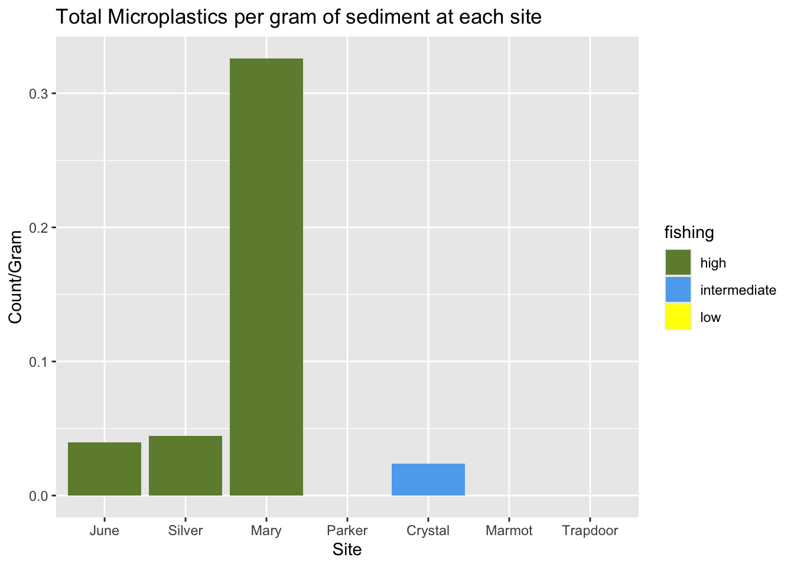
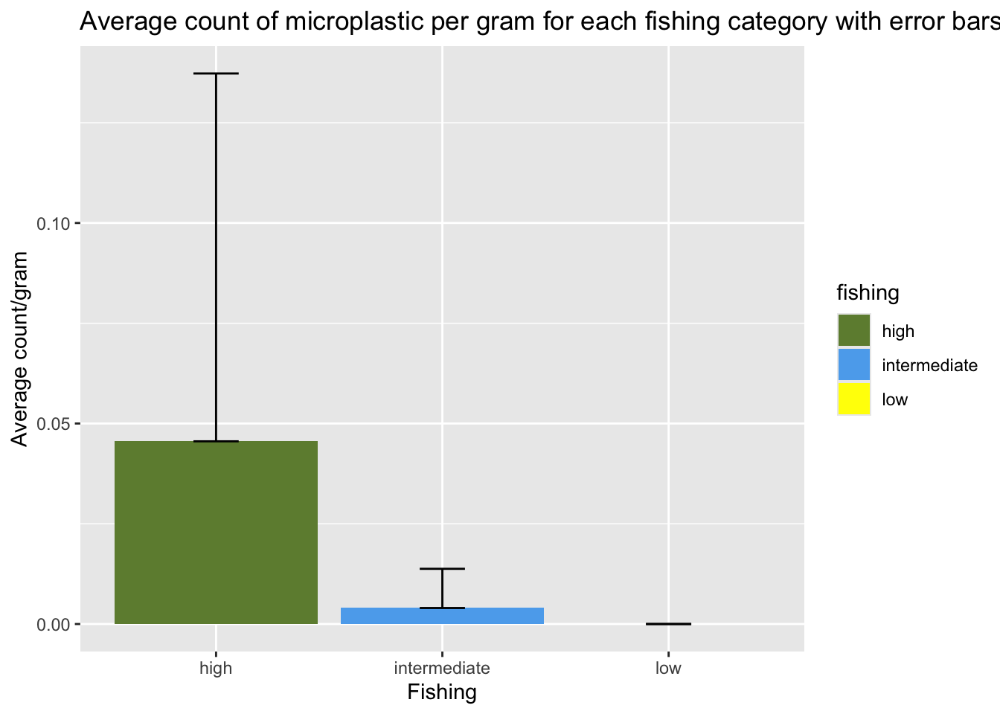
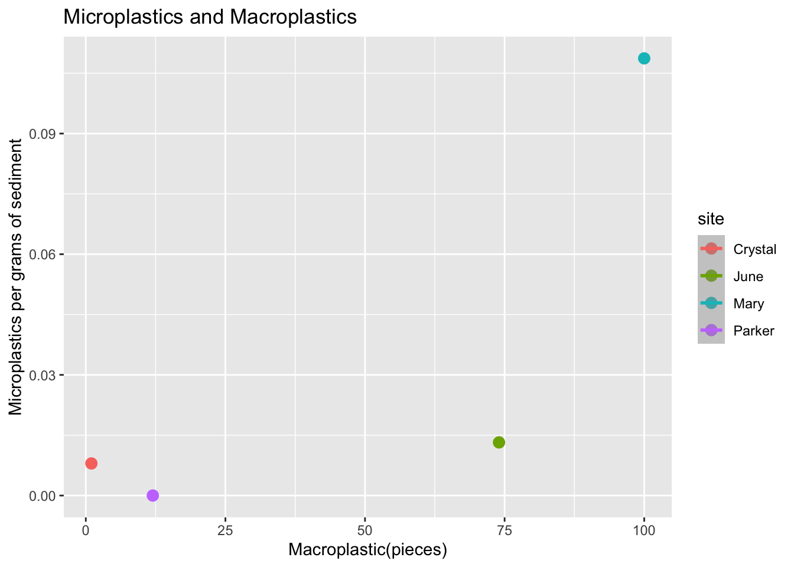

SNARL Plastics
FUERTE research project with Evelyn Tsang and Andrea Estrada
During September 2023, FUERTE, a field-work fellowship program, took 10 fellows including me and my project team to SNARL, the Sierra Nevada Aquatic Research Laboratory. Here we met professionals, learned R, and did a lot of hikes and fieldwork that culminated in our mini projects that we presented at SNARL and later at the EEMB Undergraduate Symposium. Our project was analyzing the macro and microplastics present in the Sierra Nevada lakes that we hiked to.
Here are some preliminary graphs that helped us analyse, all code was written by me with help from Dr. Jannine Chamorro. This was my first time ever coding in R and this project sparked my interest in data science.
Here I cleaned the macroplastic data and looked at the number of google reviews of the lakes where we collected data:
macro<-macro %>% filter(site%in% c("Crystal", "Mary", "June", "Parker"))
macro$site<-as.factor(macro$site)
macrosum<-macro %>% group_by(site) %>% mutate(plastic_sum=cumsum(plastic_count), plastic_mass_sum=cumsum(plastic_mass))
macrosumonly <-macrosum %>% filter(pass==3)
macro<-macro %>% mutate(fishing_plastic=powerbait+fishing_line)
fishing_macro<-macro %>% group_by(site) %>% mutate(fishingsum=cumsum(fishing_plastic)) %>% filter(pass==3)
ggplot(data=fishing_macro, aes(x=review_popularity, y=fishingsum, fill=popular)) +
geom_col() +
scale_fill_manual(values=c("darkolivegreen3", "steelblue2")) +
labs(title="Fishing Plastics vs Popularity", x="Number of Reviews", y="Total Fishing Line and Powerbait Count(pieces)")
Here I mapped macroplastic site popularity based on the previous graph:
macropoponly <-macro %>% filter(pass==3)%>% mutate(site=factor(site,levels=c("June", "Mary", "Parker", "Crystal") ))
ggplot(data=macropoponly, aes(x=site, y=review_popularity, fill=popular)) +
geom_col() +
scale_fill_manual(values=c("darkolivegreen3", "steelblue2")) +
labs(title="Site Popularity", x="Site", y="Number of Reviews")
Here I graphed how much macroplastic was at each site:
macrosumonly<-macrosumonly %>% mutate(site=factor(site,levels=c("June", "Mary", "Parker", "Crystal") ))
ggplot(data=macrosumonly, aes(x=site, y=plastic_sum, fill=popular)) +
geom_col() +
scale_fill_manual(values=c("darkolivegreen3", "steelblue2")) +
labs(title="Total Macroplastic per Site", x= "Site", y="Total Macroplastic Count(pieces)")
Here we looked at the correlation of macroplastic presence and popularity of the site based on google reviews:
ggplot(data=macrosumonly, aes(x=review_popularity, y=plastic_mass_sum)) +
geom_point() +
stat_smooth(method="lm", se=FALSE) +
labs(title="Macroplastics and popularity", x="Popularity(no. of google reviews)", y="Macroplastics(count)")
Here I cleaned microplastic data and looked at how much was at each site we collected sediment samples:
micro<-micro %>% mutate(count_per_gram = total_count/sediment_weight_g) %>%
filter(!site%in% c("Convict RT", "Convict"))
micro$site<-as.factor(micro$site)
micro<-micro %>% mutate(site=factor(site,levels=c("Convict RT", "Convict","June","Silver", "Mary", "Parker", "Crystal","Marmot", "Trapdoor") ))
micro$fishing<-as.factor(micro$fishing)
ggplot(data=micro, aes(site,count_per_gram, fill=fishing)) +
geom_col() +
scale_fill_manual(values=c("darkolivegreen4", "steelblue2","yellow")) +
labs(title="Total Microplastics per gram of sediment at each site", x= "Site", y="Count/Gram")
Here we looked at the average microplastic count per site with standard error bars:
micro_ave<-micro %>% group_by(fishing) %>% summarize(n=n(), mean=mean(count_per_gram), sd=sd(count_per_gram), standard_error = sd/sqrt(n))
ggplot(data=micro_ave, aes(x=fishing, y=mean, fill=fishing)) +
geom_col(stat="identity", position=position_dodge()) +
scale_fill_manual(values=c("darkolivegreen4", "steelblue2","yellow")) +
geom_errorbar(aes(ymin=mean, ymax=mean+sd), width=0.2, position=position_dodge(.9)) +
labs(title="Average count of microplastic per gram for each fishing category with error bars", x= "Fishing", y="Average count/gram")
Here we looked at if the amount of macroplastics affected the amount of microplastics:
micro_site_ave <- micro %>% group_by(site) %>% summarize(n=n(), mean=mean(count_per_gram), sd=sd(count_per_gram), standard_error = sd/sqrt(n))
macrosumonly$site <- as.character(macrosumonly$site)
macrosumonly$site[macrosumonly$site == "Convict"] <- "Convict S"
macrosumonly$site <- as.factor(macrosumonly$site)
micro_site_ave$site <- as.character(micro_site_ave$site)
micro_site_ave$site[micro_site_ave$site == "Convict"] <- "Convict S"
micro_site_ave$site <- as.factor(micro_site_ave$site)
all_plastic <- merge(micro_site_ave, macrosumonly)
ggplot(data=all_plastic, aes(x=plastic_sum, y=mean, colour=site)) +
geom_point(size=3) +
stat_smooth(method="lm") +
labs(title="Microplastics and Macroplastics", x= "Macroplastic(pieces)", y="Microplastics per grams of sediment")